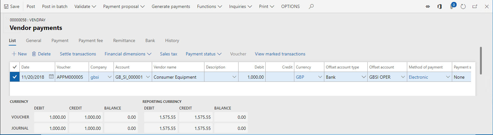
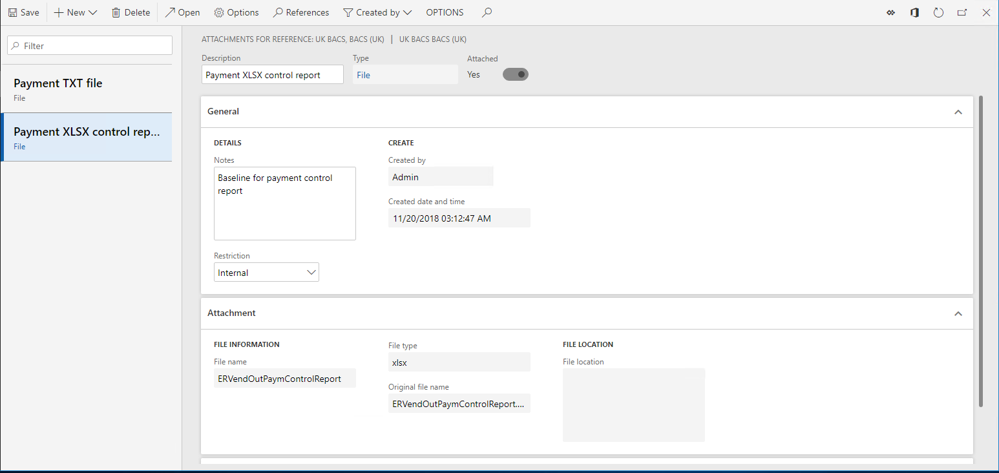
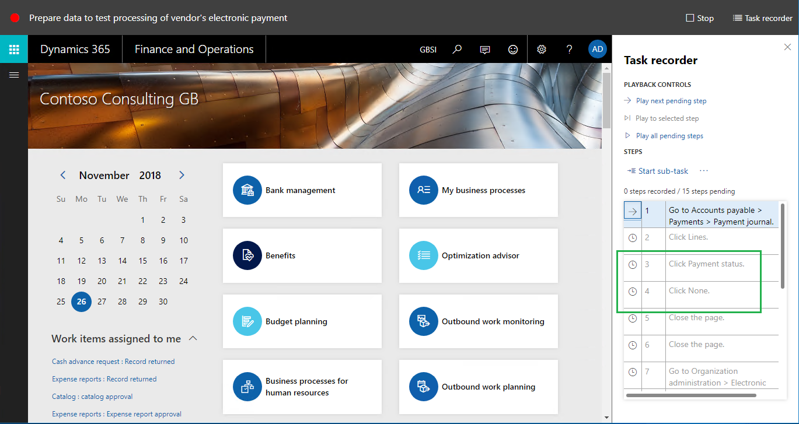
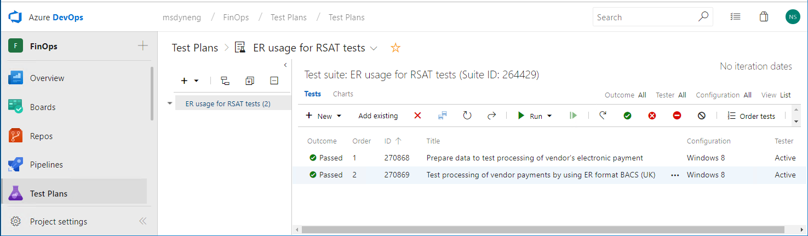
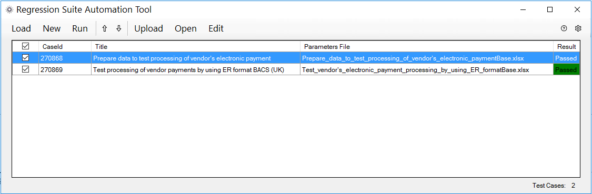

Automatisiertes Testen mit elektronischen Berichten
[!include[banner](../includes/banner.md)]In diesem Thema wird erläutert, wie Sie das Framework für elektronische Berichterstellung (ER) verwenden können, um das Testen einiger Funktionen zu automatisieren. Das Beispiel in diesem Thema zeigt, wie die die Tests der Kreditorenzahlungsverarbeitung automatisiert werden kann.
Die Anwendung verwendet das ER-Framework, um Zahlungsdateien und entsprechende Dokumente während des Lieferantenzahlungsvorgangs zu generieren. Das ER-Framework besteht aus einem Datenmodell, Modellzuordnungen und Formatkomponenten, die die Zahlungsverarbeitung für verschiedene Zahlungsarten und die Erstellung von Dokumenten in verschiedenen Formaten unterstützen. Diese Komponenten können von Microsoft Dynamics Lifecycle Services (LCS) heruntergeladen und in die Instanz importiert werden.
Sie können auch jede Microsoft-Komponente anpassen und als Grundlage Ihrer eigenen benutzerdefinierten Komponente verwenden. Wenn Sie eine benutzerdefinierte Version erstellen, können Sie Änderungen vornehmen, die bestimmte Anforderungen unterstützen. Beispielsweise können Sie das ER-Datenmodell und die ER-Modellzuordnung anpassen, um auf kundenspezifische Anwendungsdaten zuzugreifen, oder Sie können ein ER-Format ändern, um das Layout eines generierten Dokuments zu ändern.
Sie können benutzerdefinierte ER-Formate verwenden, um Zahlungsdateien zu verarbeiten, die Lieferantenzahlungen generieren, und um Steuerungsberichte zu verarbeiten. Die Versionsverwaltung wird in ER-Komponenten unterstützt. Daher kann Microsoft aktualisierte Versionen von ER-Lösungen für die Verarbeitung von Lieferantenzahlungen bereitstellen, und Sie können die aktualisierte Version automatisch mit der benutzerdefinierten Komponente zusammenführen, indem Sie eine Rebasierung dafür durchführen. Sie müssen jedoch die erneut basierte Version jedoch testen, um sicherzustellen, dass sie erwartungsgemäß arbeitet.
ER-Datenmodelle und ER-Modellzuordnungen sind für viele ER-Formate üblich, die, verwendet werden, um Zahlungen verschiedener Arten zu verarbeiten und länder-/regionsspezifische Zahlungsdokumente zu generieren. Daher ist es unbedingt geboten, Benutzerakzeptanz und Integrationstests zu automatisieren, sodass sie automatisch in mehreren Unternehmen ausgeführt werden, aber den Landes-/Regionskontext jedes Zielunternehmens berücksichtigen, verschiedene Datasets verwenden usw.
Weitere Informationen dazu, wie Sie eine benutzerdefinierte Version eines Formats erstellen, das auf dem Format basiert, das Sie von einem Konfigurationsanbieter erhalten haben, finden Sie unter ER – Aktualisieren Sie Ihr Format durch Verwendung einer neuen Basisversion dieses Formats.
Schlüsselkonzepte
Funktionale Poweruser können Benutzerakzeptanz- und Integrationstests erstellen, ohne Quellcode zu schreiben.
Verwenden Sie die ER-Ausgangswertefunktion, um generierte Dokumente mit Masterkopien zu vergleichen. Weitere Informationen finden Sie unter Nachverfolgung erstellter Berichtsergebnisse und Vergleich mit Ausgangswerten.
Verwenden Sie die Aufgabenaufzeichnung, um Testfälle zu erfassen, und schließen Sie eine Ausgangswertebewertung ein. Weitere Informationen finden Sie unter Ressourcen für Aufgabenaufzeichnung (This is an external link).
Gruppieren von Testfällen für erforderliche Testszenarien. Weitere Informationen finden Sie unter Benutzerakzeptanztests erstellen und automatisieren (This is an external link).
- Verwenden Sie Geschäftsprozessmodellierer (BPM) in LCS , um Bibliotheken für Benutzerakzeptanztests zu erstellen.
- Verwenden Sie BPM-Testbibliotheken, um in Microsoft Azure DevOps Services (Azure DevOps) einen Testplan und Testsuiten zu erstellen.
Funktionale Powernutzer können Benutzerakzeptanz- und Integrationstests durchführen.
- Verwenden Sie das Regression Suite Automation Tool (RSAT), um Testfälle der gewünschten Testsuite auszuführen.
- Melden Sie die Ergebnisse der Tests in Azure DevOps, und verwenden Sie diesen Dienst, um diese Ergebnisse zu untersuchen.
Voraussetzungen
Bevor Sie die Aufgaben in diesem Thema abschließen können, müssen die folgenden Voraussetzungen abgeschlossen werden:
Stellen Sie eine Topologie bereit, die Testautomatisierung unterstützt. Sie müssen Zugriff auf die Instanz dieser Topologie für die Systemadministrator-Rolle haben. Diese Topologie muss die Demodaten enthalten, die in diesem Beispiel verwendet werden. Weitere Informationen finden Sie unter Bereitstellen und Verwenden von Umgebungen, die fortlaufende und Build- und Testautomatisierung unterstützen (This is an external link).
Um Benutzerakzeptanz- und Integrationstests automatisch zu erstellen, müssen Sie RSAT in der Topologie installieren, die Sie verwenden und in der entsprechenden Art konfigurieren. Informationen darüber, wie Sie RSAT installieren und so konfigurieren, dass es mit den Finance and Operations-Apps und Azure DevOps funktioniert, finden Sie unter Regression Suite Automation Tool. Beachten Sie die Voraussetzungen für die Verwendung des Tools. Die folgende Abbildung zeigt ein Beispiel der RSAT-Einstellungen. Das blaue Rechteck schließt die Parameter ein, die den Zugriff auf Azure DevOps angeben. Das grüne Rechteck schließt die Parameter ein, die den Zugriff auf die Instanz angeben.
Um Testfälle in den Suiten zu organisieren, mit deren Hilfe die korrekte Ausführungssequenz sichergestellt wird, damit Sie Protokolle der Testausführungen für weitere Berichterstellung und Untersuchung erfassen können, müssen Sie über die bereitgestellte Topologie auf Azure DevOps zugreifen können.
Um das Beispiel in diesem Thema durchzuführen, sollten Sie Er-Verwendung für RSAT-Tests herunterladen. Diese ZIP-Datei enthält die folgenden Aufgaben-Guides:
Inhalt Dateiname und Speicherort Beispielaufgabenaufzeichnung, um Daten für das Testen vorbereiten Recording.xml\vorbereiten Beispielaufgabenaufzeichnung für die Verarbeitung von Kreditorenzahlung Recording.xml\verarbeiten
Bereiten Sie die Kreditorenkontenmodul vor, um Kreditorenzahlungen zu verarbeiten
Anmelden bei Ihrer Instanz.
Laden Sie die folgenden ER-Konfigurationen aus LCS herunter. Anwendungen finden Sie unter ER Import einer Konfiguration von Lifecycle Services.
- Zahlungsmodell-ER-Modell-Konfiguration
- Zahlungsmodellzuordnung 1611 ER-Modellzuordnungskonfiguration
- BACS (UK)-ER-Formatkonfiguration
Wählen Sie die GBSI-Demodatunternehmen aus, das einen Land-/Regionskontext in Großbritannien hat.
Kreditorenkontenparameter konfigurieren:
Wechseln Sie zu Kreditorenkonten > Zahlungseinstellungen > Zahlungsmethoden.
Wählen Sie die Zahlungsmethode Elektronisch aus.
Konfigurieren Sie die ausgewählte Zahlungsmethode, damit sie das ER-Format BACS (UK) verwendet, das Sie zuvor für die Kreditorenzahlungsverarbeitung heruntergeladen haben:
- Legen Sie im Inforegister Dateiformate die Option Generisches elektronisches Exportformat auf Ja fest.
- Wählen Sie im Feld Exportformatkonfiguration BACS (UK) aus.

Note
Wenn Sie die abgeleitete Version dieses ER-Formats haben, die erstellt wurde, um Anpassungen zu unterstützen, können Sie diese Konfiguration in der Zahlungsmethode Elektronisch auswählen.
Erstellen Sie eine Beispielskreditorenzahlung:
Wechseln Sie zu Kreditorenkonten > Zahlungen > Zahlungserfassung.
Stellen Sie sicher, dass Sie nicht die Zahlungserfassung nicht gebucht haben.

Wählen Sie Positionen aus, und geben Sie eine Position ein, die die folgenden Informationen enthält.
Feld Beispielswert Kreditorenname GB_SI_000001 Soll 1,000.00 Währung GBP Gegenkontenart Bank Gegenkonto GBSI OPER Zahlungsmethode Elektronisch

Bereiten Sie das ER-Framework vor, um die Kreditorenzahlungsverarbeitung zu testen
Parameter der elektronischen Berichterstellung konfigurieren
Wechseln Sie zu Organisationsverwaltung >Elektronische Berichterstellung > Parameter für elektronische Berichterstellung.
Wählen Sie auf der Registerkarte Anhänge im Feld Ausgangswert Datei als den Dokumenttyp aus, das vom Dokumenteverwaltungs(DM)-Framework verwendet wird, um Dokumente zu behalten, die als DM-Anhänge der Ausgangswertefunktion zugeordnet sind.
Generieren Sie Ausgangswertekopien von Kreditorzahlungen in Zusammenhang mit Dokumenten
Wechseln Sie zu Kreditorenkonten > Zahlungen > Zahlungserfassung.
Wählen Sie Positionen aus.
Wählen Sie Zahlungen generieren aus.
Wählen Sie die Zahlungsmethode Elektronisch aus.
Wählen Sie das Bankkonto GBSI OPER aus.
legen Sie die Kontrollbereicht drucken auf Ja fest.
Laden Sie die generierte Ausgabe als ZIP-Datei herunter.
Die heruntergeladene Datei öffnen.
Extrahieren Sie die folgenden Dateien aus der heruntergeladenen Datei:
- Datei Zahlungsdatei im Textformat
- ERVendOutPaymControlReport-Kontrollberichtdatei in XLSX-Format
Aktivieren Sie die ER-Ausgangswertefunktion
- Wechseln Sie zu Organisationsverwaltung > Elektronische Berichterstellung > Konfigurationen.
- Klicken Sie im Aktivitätsbereich auf die Registerkarte Konfigurationen, und wählen Sie Benutzerparameter aus.
- Legen Sie die Option In Debugmodus ausführen auf Ja fest.
Wenn Sie den Parameter In Debugmodus ausführen aktivieren, möchten,zwingen Sie das ER-Framework, nach der Ausführung eines beliebigen ER-Formats die folgenden Aktivitäten auszuführen, das ausgehende Dokumente generiert:
Legen Sie fest, ob ein Ausgangswert für jede Komponente des ausgeführten ER-Formats konfiguriert wurde.
Bestimmen Sie, ob jeder konfigurierter Ausgangswert in den aktuellen Bedingungen gilt (Unternehmenscode der angemeldeten Unternehmens, des Dateinamens und der Dateinamenerweiterung der generierten Ausgabe, usw.).
Für jeden entsprechenden Ausgangswert führen Sie die folgenden Aktivitäten aus:
- Vergleichen Sie die Ausgabe, die bei der Ausführung des ER-Formats mit dem entsprechenden Ausgangswert generiert wird.
- Speichern Sie die Ergebnisse des Vergleichs im Debug-Protokoll der ER-Konfigurationen.
Konfigurieren Sie ER-Ausgangswerte für die Kreditorenzahlungsverarbeitung
Wechseln Sie zu Organisationsverwaltung > Elektronische Berichterstellung > Konfigurationen.
Wählen Sie Ausgangswerte aus.
Wählen Sie Neu aus.
Wählen Sie im Feld Verweis das Format BACS (UK) aus.
Wählen Sie Anhänge aus.
Fügen Sie einen neuen Ausgangswert für die Kreditorenzahlungsdatei hinzu:
- Wählen Sie Neu aus.
- Wählen Sie im Feld Typ den DM-Dokumenttyp Datei aus, den Sie in den ER-Parametern konfigurierten, um Ausgangswertartefakte zu speichern.
- Durchsuchen Sie sich, um die lokal gespeicherte Zahlungsdatei Datei im Textformat auszuwählen.
- Geben Sie im Feld Beschreibung Zahlungs-TXT-Datei ein.
Fügen Sie dem Kontrollbericht für die Kreditorenzahlung einen neuen Ausgangswert hinzu:
- Wählen Sie Neu aus.
- Wählen Sie im Feld Typ den DM-Dokumenttyp Datei aus, den Sie in den ER-Parametern konfigurierten, um Ausgangswertartefakte zu speichern.
- Durchsuchen Sie sie, um die lokal gespeicherte Zahlungsdatei ERVendOutPaymControlReport im XLSSX-Format auszuwählen.
- Geben Sie im Feld Beschreibung Zahlungs-XLSX-Kontrollbericht ein.

Schließen Sie die Seite.
Auf dem Inforegister Ausgangswerte wählen Sie Neu aus, um einen Ausgangswert für die Zahlungsdatei zu konfigurieren:
- Geben Sie der Zeile den Namen Ausgangswerteinstellungen für Zahlungsdatei.
- Wählen Sie im Feld Dateikomponentenname Datei aus, um diese Ausgangswerte bei der ER-Formatausgabe anzuwenden, die die Zahlungsdatei im Textformat BACS (UK) generiert.
- Wählen Sie im Feld Unternehmen GBSI aus, um diesen Ausgangswert anzuwenden, wenn das ER-Format BACS (UK) im GBSI-Unternehmen ausgeführt wird.
- Im Feld Dateinamenmaske geben Sie *.TXT ein, um den Ausgangswert nur auf Ausgaben der Formatkomponente Datei anzuwenden, die die .txt-Dateinamenserweiterung haben.
- Wählen Sie im Feld Ausgangswert TXT-Datei für Zahlung aus, damit dieser Ausgangswert für den Vergleich mit der generierten Ausgabe verwendet wird.
Wählen Sie Neu aus, um einen Ausgangswert für den Kontrollbericht zu konfigurieren:
- Geben Sie der Zeile den Namen Ausgangswerteinstellungen für Kontrollbericht.
- Wählen Sie im Feld Dateikomponentenname ERVendOutPaymControlReport aus, um diese Ausgangswerte bei der ER-Formatausgabe anzuwenden, die den Kontrollbericht generiert.
- Wählen Sie im Feld Unternehmen GBSI aus, um diesen Ausgangswert anzuwenden, wenn das ER-Format BACS (UK) im GBSI-Unternehmen ausgeführt wird.
- Im Feld Dateinamenmaske geben Sie *.XLSX ein, um den Ausgangswert nur auf Ausgaben der Formatkomponente ERVendOutPaymControlReport anzuwenden, die die .xlsx-Dateinamenserweiterung haben.
- Wählen Sie im Feld Ausgangswert XLSX-Kontrollbericht für Zahlung aus, damit dieser Ausgangswert für den Vergleich mit der generierten Ausgabe verwendet wird.

Erfassen Sie Tests, um die Kreditorenzahlungsverarbeitung zu überprüfen
Als funktionaler Poweruser können Sie Ihre eigenen Schritte erfassen, um die Kreditorenzahlungsverarbeitung zu testen. Es wird empfohlen, dass Sie die Aufgabenaufzeichnung Recording.xml\vorbereiten wiedergeben (und nach Bedarf bearbeiten), die Sie zuvor heruntergeladen haben. Diese Aufnahme wird verwendet, um alle Testdaten auf den korrekte Status festzulegen. Dieser Schritt ist erforderlich, da die Tests mehrmals durchgeführt werden können und für jeden Test Daten verwendet werden müssen, die den gleichen Status besitzen.
Benutzereinstellungen zurücksetzen
- Öffnen Sie das Standard-Dashboard.
- Wählen Sie die Schaltfläche Einstellungen (Zahnradsymbol) aus.
- Wählen Sie Benutzeroptionen aus.
- Wählen Sie Nutzungsdaten aus.
- Wählen Sie Zurücksetzen aus.
- Wählen Sie Ja aus, um zu bestätigen, dass Sie die Nutzungsdaten zurücksetzen möchten.
- Schließen Sie die Seite.
Erfassen Sie die Schritte, um Daten für das Testen vorbereiten
- Wählen Sie die Schaltfläche Einstellungen (Zahnradsymbol) aus.
- Wählen Sie Aufgabenaufzeichnung aus.
- Wählen Sie Aufzeichnung wiedergeben aus.
- Wählen Sie Von diesem PC öffnen aus.
- Wählen Sie Durchsuchen und die lokal gespeicherte Datei Recording.xml\vorbereiten aus.
- Wählen Sie Starten aus.
- Wählen Sie weiterhin Nächsten ausstehenden Schritt wiedergeben aus, bis alle Schritte in die Aufzeichnung wiedergegeben wurden.
Diese Aufgabenaufzeichnung führt die folgenden Aktivitäten aus:
Dden Status der verarbeiteten Zahlungsposition auf Keiner festlegen.

Schalten Sie den Benutzerparameter In Debugmodus ausführen ein.

Säubern Sie das ER-Debug-Protokoll, in dem die Ergebnisse des Vergleichs der generierten Dateien mit den Ausgangswerten enthalten sind.
Erfassen Sie die Schritte zum Testen der Kreditorenzahlungsverarbeitung
Es wird empfohlen, dass Sie die Aufgabenaufzeichnung Recording.xml\verarbeiten wiedergeben (und nach Bedarf bearbeiten), die Sie zuvor heruntergeladen haben. Diese Erfassung wird verwendet, um Kreditorenzahlungen zu verarbeiten und die Ergebnisse des Vergleichs der generierten Dokumente mit den entsprechenden Ausgangswerten zu prüfen.
- Wählen Sie die Schaltfläche Einstellungen (Zahnradsymbol) aus.
- Wählen Sie Aufgabenaufzeichnung aus.
- Wählen Sie Aufzeichnung wiedergeben aus.
- Wählen Sie Von diesem PC öffnen aus.
- Wählen Sie Durchsuchen und die lokal gespeicherte Datei Recording.xml\vberarbeiten aus.
- Wählen Sie Starten aus.
- Wählen Sie weiterhin Nächsten ausstehenden Schritt wiedergeben aus, bis alle Schritte in die Aufzeichnung wiedergegeben wurden.
Diese Aufgabenaufzeichnung führt die folgenden Aktivitäten aus:
Kreditorenzahlungsverarbeitung starten
Legen Sie die richtigen Laufzeitparameter fest, und schalten Sie Generierung eines Kontrollberichts ein.

Greifen Sie auf das ER-Debug-Protokoll zu, um die Ergebnisse des Vergleichs der generierten Ausgaben mit den ensprechenden Ausgangswerten aufzuzeichnen.
Im ER-Debug-Protokoll werden die Ergebnisse des Vergleichs im Feld Generierter Text angezeigt. Die Felder Formatkomponente und Formatpfad, der einen Protokolleintrag verursacht hat beziehen sich auf die Dateikomponente, mit dem die generierte Ausgabe des Ausgangswerts verglichen wurde.

Der Vergleich der aktuellen Ausgabe zu den Ausgangswerten wird aufgezeichnet, indem Sie die Aufgabenaufzeichnungsoption Überprüfen verwenden und Aktueller Wert auswählen.

Die folgende Abbildung zeigt, wie die aufgezeichneten Prüfungsschritte in der Aufgabenaufzeichnung aussehen.

Fügen Sie die aufgezeichneten Tests Azure DevOps hinzu
Öffnen Sie die Azure DevOps-Umgebung.
Wählen Sie das Projekt aus, das Sie in den RSAT-Parametern definiert haben, als Sie das Tool konfiguriert haben.
Wählen Sie den Testplan aus, das Sie in den RSAT-Parametern definiert haben, als Sie das Tool konfiguriert haben.
Neuen Testfall für den ausgewählten Testplan erstellen:
- Geben Sie dem Testfall den Namen Daten zum Testen der Verarbeitung der elektronischen Zahlung des Kreditors vorbereiten.
- Fügen Sie die Datei Recording.xml aus dem Ordner Vorbereiten an, den Sie zuvor heruntergeladen haben.
Neuen Testfall für den ausgewählten Testplan erstellen:
- Geben Sie dem Testfall den Namen Testen der Verarbeitung von Kreditorenzahlungen unter Verwendung des ER-Format BACS (UK).
- Fügen Sie die Datei Recording.xml aus dem Ordner Verarbeiten an, den Sie zuvor heruntergeladen haben.

Note
Beachten Sie die korrekte Ausführungsreihenfolge der Tests, die hinzugefügt werden.
Bereiten Sie RSAT vor, um die aufgezeichneten Tests vorzunehmen
Laden Sie die Tests von Azure DevOps auf RSAT
Öffnen Sie die lokale RSAT-Anwendung in der aktuellen Topologie.
Wählen Sie Laden aus, um die Tests zu laden, die sich derzeit in Azure DevOps befinden in RSAT.

Automatisierungs- und Parameterdateien erstellen
Wählen Sie in RSAT die Tests aus, die Sie von Azure DevOps geladen haben.
Wählen Sie Neu aus, um RAST-Automatisierungs- und -Parameterdateien zu erstellen.

Ändern der Parameterdateien
Wählen Sie in RAST den Testfall Daten zum Testen der Verarbeitung der elektronischen Zahlung des Kreditors vorbereiten aus.
Wählen Sie Bearbeiten aus.
Ändern Sie in der Microsoft Excel-Arbeitsmappe, die im Arbeitsblatt Allgemein geöffnet ist, den Unternehmenscode zu GBSI, da dieses Unternehmen für die Testausführung verwendet wird.
Wählen Sie in RSAT den Testfall Testen der Verarbeitung von Kreditorenzahlungen unter Verwendung des ER-Format BACS (UK) aus.
Wählen Sie Bearbeiten aus.
In der Excel-Arbeitsmappe, die im Arbeitsblatt Allgemein geöffnet ist, ändern Sie den Unternehmenscode zu GBSI.
Beachten Sie im Arbeitsblatt ERFormatMappingRunLogTable, dass die Zellen A :3 und C: 3 den Text der Felder in der ER-Debug-Protokolltabelle enthalten, die verwendet werden, um die Ergebnisse des Vergleichs der Ausgabe mit den Ausgangswerten zu prüfen. Diese Texte werden verwendet, um ER-Debug-Protokolldatensätze auszuwerten, die während der Testausführung erstellt werden.
Ausführen des Tests und Analysieren der Ergebnisse
Ausführen der Tests in RSAT
- Auswählen der geladenen Tests in RSAT
- Wählen Sie Ausführen aus.
Beachten Sie, dass Testfälle in der Anwendung automatisch ausgeführt werden, indem ein Webbrowser verwendet wird.
Analysieren der Ergebnisse der Testausführung
Die Ergebnisse der Testausführung werden in RSAT gespeichert. Beachten Sie, dass beide Tests erfolgreich waren.

Beachten Sie, dass die Ergebnisse der Testausführung auch an Azure DevOps gesendet werden, damit Sie weitere Analysen ausführen können.

Simulieren einer Situation, in der der Test fehlschlägt
Diese Testsuite muss fehlschlagen, wenn mindestens eine der generierten Ausgaben nicht mit dem entsprechenden Ausgangswert übereinstimmt. Um diese Situation zu erreichen, können Sie die abgeleitete Version des Formats BACS (UK) verwenden, das eine Zahlungsdatei mit unterschiedlichem Inhalt als der entsprechende Ausgangswert generiert. Um diese Situation zu simulieren, können Sie dasselbe Format BACS (UK) verwenden, aber den Zahlungsbetrag auf der Position für verarbeitete Zahlungen ändern.
- Öffnen Sie die Anwendung, und wechseln Sie zu Kreditorenkonten > Zahlungen > Zahlungserfassung.
- Wählen Sie Positionen aus.
- Wählen Sie die Zahlungsposition aus, und wählen Sie dann Zahlungsstatus > Kein aus.
- Ändern Sie im Feld Soll den Wert von 1.000,00 auf 2.000,00.
- Wählen Sie Speichern aus, um die Änderungen zu speichern.
Ausführen der Tests in RSAT
- Auswählen der geladenen Tests in RSAT
- Wählen Sie Ausführen aus.
Beachten Sie, dass Testfälle in der Anwendung automatisch ausgeführt werden, indem ein Webbrowser verwendet wird.
Analysieren der Ergebnisse der Testausführung
Die Ergebnisse der Testausführung werden in RSAT gespeichert. Beachten Sie, dass der zweite Test bei der zweiten Ausführung fehlschlug.

Beachten Sie, dass die Ergebnisse der Testausführung auch an Azure DevOps gesendet werden, damit Sie weitere Analysen ausführen können.

Sie können auf den Status eines Tests zugreifen. Sie können auch auf das Ausführungsprotokoll zugreifen, um die Gründe für einen Fehler zu analysieren. In der folgenden Abbildung zeigt das Ausführungsprotokoll, dass der Fehler aufgetreten aufgrund des Unterschieds im Inhalt zwischen der generierten Zahlungsdatei und dem Ausgangswert aufgetreten ist.

Daher kann die Funktion eines beliebigen ER-Formats, wie Sie gesehen haben, automatisch überprüft werden, indem RSAT als die Testplattform verwendet wird, und indem die auf die Aufgabenaufzeichnung basierenden Testfälle verwendet werden, die die ER-Ausgangswertefunktion verwenden.
Zusätzliche Ressourcen
- Ressourcen für Aufgabenaufzeichnung (This is an external link)
- Regression Suite Automation Tool
- Benutzerakzeptanztests erstellen und automatisieren (This is an external link)
- Bereitstellen und Verwenden von Umgebungen, die fortlaufende und Build- und Testautomatisierung unterstützen (This is an external link)
- Nachverfolgung erstellter Berichtsergebnisse und Vergleich mit Ausgangswerten
- ER – Aktualisieren Sie Ihr Format durch Verwendung einer neuen Basisversion dieses Formats
- ER Import einer Konfiguration von Lifecycle Services